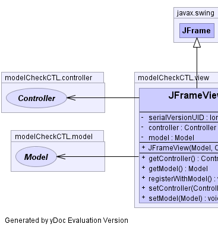
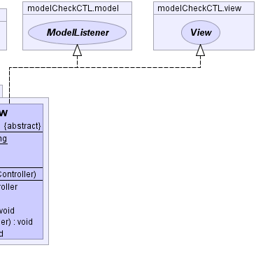

java.awt.Component
java.awt.Container
java.awt.Window
java.awt.Frame
javax.swing.JFrame
modelCheckCTL.view.JFrameView
java.awt.Component
java.awt.Container
java.awt.Window
java.awt.Frame
javax.swing.JFrame
modelCheckCTL.view.JFrameView
|
|||||||||
| PREV CLASS NEXT CLASS | FRAMES NO FRAMES | ||||||||
| SUMMARY: NESTED | FIELD | CONSTR | METHOD | DETAIL: FIELD | CONSTR | METHOD | ||||||||
java.lang.Object
public abstract class JFrameView
|  |  |
| Nested Class Summary |
|---|
| Nested classes/interfaces inherited from class javax.swing.JFrame |
|---|
javax.swing.JFrame.AccessibleJFrame |
| Nested classes/interfaces inherited from class java.awt.Frame |
|---|
java.awt.Frame.AccessibleAWTFrame |
| Nested classes/interfaces inherited from class java.awt.Window |
|---|
java.awt.Window.AccessibleAWTWindow |
| Nested classes/interfaces inherited from class java.awt.Container |
|---|
java.awt.Container.AccessibleAWTContainer |
| Nested classes/interfaces inherited from class java.awt.Component |
|---|
java.awt.Component.AccessibleAWTComponent, java.awt.Component.BltBufferStrategy, java.awt.Component.FlipBufferStrategy |
| Field Summary | |
|---|---|
private Controller |
controller
|
private Model |
model
|
private static long |
serialVersionUID
|
| Fields inherited from class javax.swing.JFrame |
|---|
accessibleContext, EXIT_ON_CLOSE, rootPane, rootPaneCheckingEnabled |
| Fields inherited from class java.awt.Frame |
|---|
CROSSHAIR_CURSOR, DEFAULT_CURSOR, E_RESIZE_CURSOR, HAND_CURSOR, ICONIFIED, MAXIMIZED_BOTH, MAXIMIZED_HORIZ, MAXIMIZED_VERT, MOVE_CURSOR, N_RESIZE_CURSOR, NE_RESIZE_CURSOR, NORMAL, NW_RESIZE_CURSOR, S_RESIZE_CURSOR, SE_RESIZE_CURSOR, SW_RESIZE_CURSOR, TEXT_CURSOR, W_RESIZE_CURSOR, WAIT_CURSOR |
| Fields inherited from class java.awt.Component |
|---|
BOTTOM_ALIGNMENT, CENTER_ALIGNMENT, LEFT_ALIGNMENT, RIGHT_ALIGNMENT, TOP_ALIGNMENT |
| Fields inherited from interface javax.swing.WindowConstants |
|---|
DISPOSE_ON_CLOSE, DO_NOTHING_ON_CLOSE, HIDE_ON_CLOSE |
| Fields inherited from interface java.awt.image.ImageObserver |
|---|
ABORT, ALLBITS, ERROR, FRAMEBITS, HEIGHT, PROPERTIES, SOMEBITS, WIDTH |
| Constructor Summary | |
|---|---|
JFrameView(Model model,
Controller controller)
Constructor set the model and controller. |
|
| Method Summary | |
|---|---|
Controller |
getController()
|
Model |
getModel()
|
void |
registerWithModel()
Register the listener with the model. |
void |
setController(Controller controller)
|
void |
setModel(Model model)
|
| Methods inherited from class javax.swing.JFrame |
|---|
addImpl, createRootPane, frameInit, getAccessibleContext, getContentPane, getDefaultCloseOperation, getGlassPane, getJMenuBar, getLayeredPane, getRootPane, isDefaultLookAndFeelDecorated, isRootPaneCheckingEnabled, paramString, processWindowEvent, remove, setContentPane, setDefaultCloseOperation, setDefaultLookAndFeelDecorated, setGlassPane, setIconImage, setJMenuBar, setLayeredPane, setLayout, setRootPane, setRootPaneCheckingEnabled, update |
| Methods inherited from class java.awt.Frame |
|---|
addNotify, finalize, getCursorType, getExtendedState, getFrames, getIconImage, getMaximizedBounds, getMenuBar, getState, getTitle, isResizable, isUndecorated, remove, removeNotify, setCursor, setExtendedState, setMaximizedBounds, setMenuBar, setResizable, setState, setTitle, setUndecorated |
| Methods inherited from class java.awt.Window |
|---|
addPropertyChangeListener, addPropertyChangeListener, addWindowFocusListener, addWindowListener, addWindowStateListener, applyResourceBundle, applyResourceBundle, createBufferStrategy, createBufferStrategy, dispose, getBufferStrategy, getFocusableWindowState, getFocusCycleRootAncestor, getFocusOwner, getFocusTraversalKeys, getGraphicsConfiguration, getInputContext, getListeners, getLocale, getMostRecentFocusOwner, getOwnedWindows, getOwner, getToolkit, getWarningString, getWindowFocusListeners, getWindowListeners, getWindowStateListeners, hide, isActive, isAlwaysOnTop, isFocusableWindow, isFocusCycleRoot, isFocused, isLocationByPlatform, isShowing, pack, postEvent, processEvent, processWindowFocusEvent, processWindowStateEvent, removeWindowFocusListener, removeWindowListener, removeWindowStateListener, setAlwaysOnTop, setBounds, setCursor, setFocusableWindowState, setFocusCycleRoot, setLocationByPlatform, setLocationRelativeTo, show, toBack, toFront |
| Methods inherited from class java.awt.Container |
|---|
add, add, add, add, add, addContainerListener, applyComponentOrientation, areFocusTraversalKeysSet, countComponents, deliverEvent, doLayout, findComponentAt, findComponentAt, getAlignmentX, getAlignmentY, getComponent, getComponentAt, getComponentAt, getComponentCount, getComponents, getComponentZOrder, getContainerListeners, getFocusTraversalPolicy, getInsets, getLayout, getMaximumSize, getMinimumSize, getMousePosition, getPreferredSize, insets, invalidate, isAncestorOf, isFocusCycleRoot, isFocusTraversalPolicyProvider, isFocusTraversalPolicySet, layout, list, list, locate, minimumSize, paint, paintComponents, preferredSize, print, printComponents, processContainerEvent, remove, removeAll, removeContainerListener, setComponentZOrder, setFocusTraversalKeys, setFocusTraversalPolicy, setFocusTraversalPolicyProvider, setFont, transferFocusBackward, transferFocusDownCycle, validate, validateTree |
| Methods inherited from class java.awt.Component |
|---|
action, add, addComponentListener, addFocusListener, addHierarchyBoundsListener, addHierarchyListener, addInputMethodListener, addKeyListener, addMouseListener, addMouseMotionListener, addMouseWheelListener, bounds, checkImage, checkImage, coalesceEvents, contains, contains, createImage, createImage, createVolatileImage, createVolatileImage, disable, disableEvents, dispatchEvent, enable, enable, enableEvents, enableInputMethods, firePropertyChange, firePropertyChange, firePropertyChange, firePropertyChange, firePropertyChange, firePropertyChange, firePropertyChange, firePropertyChange, firePropertyChange, getBackground, getBounds, getBounds, getColorModel, getComponentListeners, getComponentOrientation, getCursor, getDropTarget, getFocusListeners, getFocusTraversalKeysEnabled, getFont, getFontMetrics, getForeground, getGraphics, getHeight, getHierarchyBoundsListeners, getHierarchyListeners, getIgnoreRepaint, getInputMethodListeners, getInputMethodRequests, getKeyListeners, getLocation, getLocation, getLocationOnScreen, getMouseListeners, getMouseMotionListeners, getMousePosition, getMouseWheelListeners, getName, getParent, getPeer, getPropertyChangeListeners, getPropertyChangeListeners, getSize, getSize, getTreeLock, getWidth, getX, getY, gotFocus, handleEvent, hasFocus, imageUpdate, inside, isBackgroundSet, isCursorSet, isDisplayable, isDoubleBuffered, isEnabled, isFocusable, isFocusOwner, isFocusTraversable, isFontSet, isForegroundSet, isLightweight, isMaximumSizeSet, isMinimumSizeSet, isOpaque, isPreferredSizeSet, isValid, isVisible, keyDown, keyUp, list, list, list, location, lostFocus, mouseDown, mouseDrag, mouseEnter, mouseExit, mouseMove, mouseUp, move, nextFocus, paintAll, prepareImage, prepareImage, printAll, processComponentEvent, processFocusEvent, processHierarchyBoundsEvent, processHierarchyEvent, processInputMethodEvent, processKeyEvent, processMouseEvent, processMouseMotionEvent, processMouseWheelEvent, removeComponentListener, removeFocusListener, removeHierarchyBoundsListener, removeHierarchyListener, removeInputMethodListener, removeKeyListener, removeMouseListener, removeMouseMotionListener, removeMouseWheelListener, removePropertyChangeListener, removePropertyChangeListener, repaint, repaint, repaint, repaint, requestFocus, requestFocus, requestFocusInWindow, requestFocusInWindow, reshape, resize, resize, setBackground, setBounds, setComponentOrientation, setDropTarget, setEnabled, setFocusable, setFocusTraversalKeysEnabled, setForeground, setIgnoreRepaint, setLocale, setLocation, setLocation, setMaximumSize, setMinimumSize, setName, setPreferredSize, setSize, setSize, setVisible, show, size, toString, transferFocus, transferFocusUpCycle |
| Methods inherited from class java.lang.Object |
|---|
clone, equals, getClass, hashCode, notify, notifyAll, wait, wait, wait |
| Methods inherited from interface modelCheckCTL.model.ModelListener |
|---|
modelChanged |
| Methods inherited from interface java.awt.MenuContainer |
|---|
getFont, postEvent |
| Field Detail |
|---|
private static final long serialVersionUID
private Model model
private Controller controller
| Constructor Detail |
|---|
public JFrameView(Model model,
Controller controller)
model - controller - | Method Detail |
|---|
public void registerWithModel()
public Controller getController()
getController in interface Viewpublic void setController(Controller controller)
setController in interface Viewpublic Model getModel()
getModel in interface Viewpublic void setModel(Model model)
setModel in interface View
|
|||||||||
| PREV CLASS NEXT CLASS | FRAMES NO FRAMES | ||||||||
| SUMMARY: NESTED | FIELD | CONSTR | METHOD | DETAIL: FIELD | CONSTR | METHOD | ||||||||